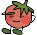
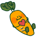
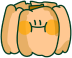

Nr. 1
Verken Moestuin

Ontdek de betoverende moestuinen en maak ontspannen wandelingen
langs de groene paadjes. Bewonder met zorg gekweekte gewassen,
bloemen en planten, allemaal op een milieuvriendelijke en
biologische manier.
Deze stadsnatuurervaring is een unieke gelegenheid voor jou
en je gezin om de natuur te ervaren!
Nr. 2
Plant met liefde

In de moestuin stop je zaadjes in de grond en verzorg je ze met
water en zonlicht. Deze zaadjes groeien uit tot sterke planten.
Samen kun je kiezen welke groenten en fruit je wilt laten groeien,
zoals tomaten, wortels en basilicum.
Tijdens het planten leer je waarom de aarde zo belangrijk is
voor zowel de planten als voor ons.
Nr. 3
Geniet van oogst

Met de tijd zie je een magische verandering in je moestuin. De
zaailingen worden volwassen planten met heerlijke vruchten.
Dit is de beloning voor je inspanningen. Samen met je gezin
kun je sappige tomaten plukken en je eigen salade maken, wat niet
alleen geweldig smaakt, maar je ook laat zien dat hard werken
loont.
In je moestuin leer je geduld, zorgzaamheid en de waarde van
verbondenheid met de natuur. Je ontwikkelt milieubewustzijn,
versterkt gezinsbanden, verwerft voedingseducatie en vergroot
zelfvertrouwen.
Dit avontuur brengt het hele gezin samen voor waardevolle
leerervaringen en onvergetelijke momenten in de buitenlucht.